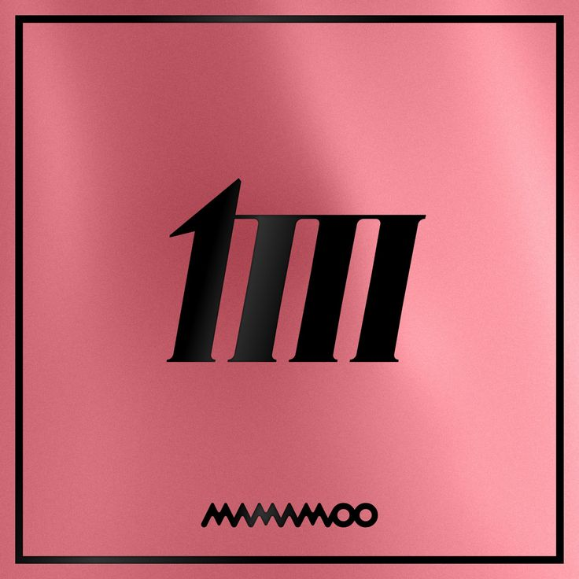

The songs of Mamamoo
Welcome to the amazing world with of Mamamoo! This is for all the moomoo's in the world
Hello

This is Mamamoos first album. When they came out with this album, it was super diffrent then other girlgroups that where already around. They had a jazzy/ soul vibe to them and people were liking it. A lot of diffrent artist that were already in the industry for a long gave them a shoutout on shows or on live streams aspesaly when the question was "what is your favorite song these days" and their answar would be Mr ambigouos by Mamamoo.
Piano man

info
Pink funky

info
Memory

info
Purple

info
Four Seasons


This was a project that was conected to eachother and it was called the four colors project. The albums all have there own season and had their own specific color. The members where asigned to an album and each of them got a solo song on the album. The first album that was relased on march 7th 2018, was the yellow album called Yellow Flower. This was Hwasa's album, it reprecents the season spring and the name of her solo song is Be Calm.
The second album is the red album, that was released on july 16th 2018 and the name of the album is Red Moon. This album is dedicated to Moonbyul, it reprecents the season of rain and the name of her solo song is Selfish. Suelgi of red velvet was a feture on the song. On that album the group started to promote the song Egotistic that won multipule prices.
The therd album is the blue album, that was relased on november 29th 2018 and the name of the album is Blue;s. This album is dedicated to Solar, it reprecents the season and the name of her solo song is Hello. On this album they were promoting the song Wind Flower and that was also a big success. It was not like the last song upbeat but this time it was a more of a slower song.
The last album of the seasons project is white, that was released on march 14 2019 and the name of the album is White Wind. This album is dedicated to the last but not least member Wheein and the name of her solo song is 25. The song that they were promoting for the album was Gogobebe

Travel

This album was released on november 3th 2020. They did the promotion for the album on october 6th and they let their fans know that they will be puttig out 2 singles. The first pre-release that Mamamoo brought out was Dingga and the did this through a music video premier on youtube. After this they released their full EP with again a music video premier on youtube for the song Aya. On the 25th of november Mamamoo also brought out their Japanese edition of the EP Travel.
The members were very busy in 2020 and started to focus more on there solo project. Moonbyul released her EP Dark side on febuari 4th, with promotion (music banks) and after this she reseased an other EP called Moon on the 29th of may. Solar came out with her first ever single album called Spit it out, released on the 23th of april. She also promoted the song a lot and won a few prices for it as well. Hwasa came out with an EP called Maria that she released on june 29th. After promoting and winning awards for her song, Hwasa also joined a show in august that is called Hangout with Yoo . On the show they were making a girlgroup that all have a bad girl vibe to them called Refund Sisters and this group was formed with Uhm Jung-Hwa, Lee Hyori and Jessi. They released and debuted there single Don't touch me in october.
WAW

info
Mic on
info